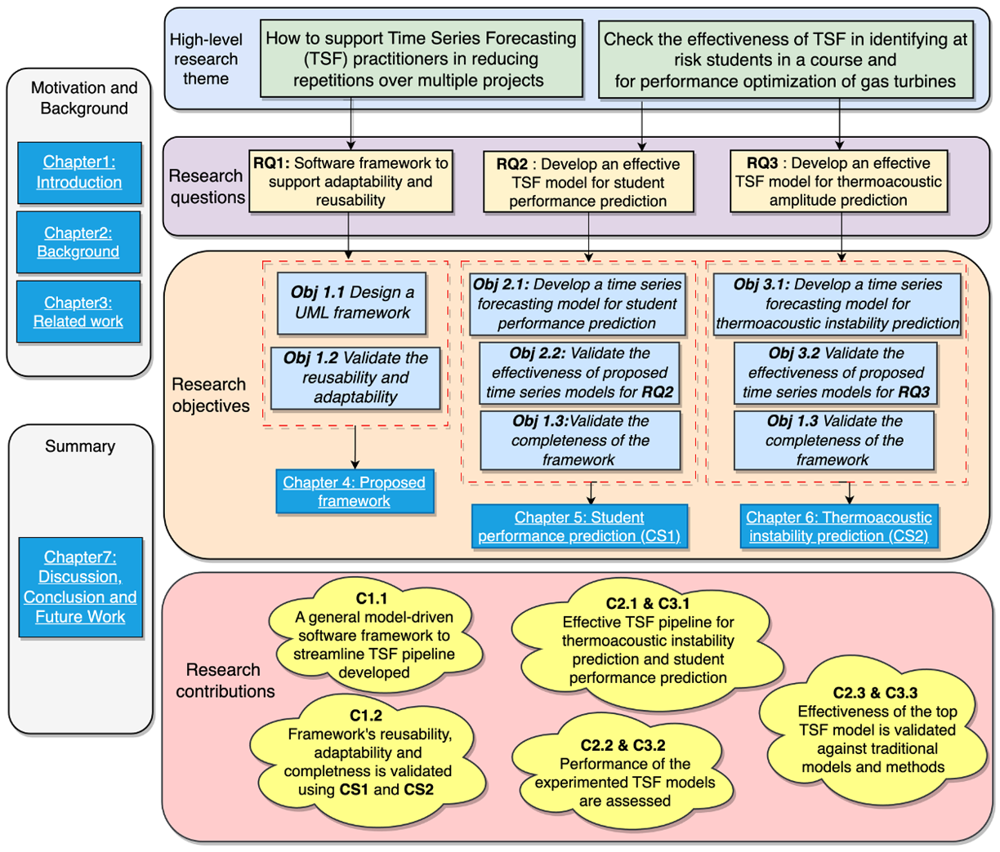

A Model-Driven Framework for Domain-Specific Adaptation of Time Series Forecasting
- Tech Stack: Java, Python, TensorFlow, Keras, Jupyter-Notebook, MLOps
- Github URL: Project Link
- Pitch: Link
Abstract
Time series forecasting (TSF), predicting future values based on historical data, has emerged as a vital tool in various fields, enabling intelligent systems and data-driven decision-making. However, the repetitive nature of implementing similar components and procedures across multiple machine learning (ML) projects often leads to inefficiencies and reduced scalability, resulting in a lack of consistency. To address this challenge, this Master’s thesis focuses on designing a model-based software architecture defined using the Unified Modeling Language (UML) to promote reusability and adaptability in time series forecasting pipelines. The effectiveness of the framework is examined through two independent research projects: (1) Predicting early undergraduate students’ performance and (2) Thermo-acoustic instability prediction in gas turbine combustion. The first case study aims to predict the performance of early undergraduate students, enabling educational institutions to provide appropriate interventions and support. The second case study predicts thermo-acoustic instability in gas turbine combustion, focusing on the crucial role of time series forecasting in improving overall performance and efficiency of gas turbines. The research questions of the thesis compare time-series-based forecasting with traditional engineering models to validate its effectiveness. Together, the framework and case studies contribute to enhancing the efficiency, scalability, and adaptability of TSF pipelines and validating the effectiveness of TSF techniques in predicting student performance in a course and thermoacoustic instability prediction in combustion system of gas turbines.
